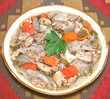

|
Chicken in EscabecheBolivia - Escabeche de Pollo | ||||
| Serves: Effort: Sched: DoAhead: |
4 main *** 3-1/2 hrs Yes |
Chicken in a mildly tart wine vinegar sauce, served lightly chilled. This recipe is from Bolivia, but nearly identical recipes are popular in Chile and Argentina. | |||
|
1-3/4 10 6 7 1/4 3/4 1/4 1/2 1/2 1 2 3 2/3 1/4 |
# oz oz oz c c c t t in t t |
Chicken Meat (1) Onions (2) Carrots Bell Pepper (3) Oil Wine Vinegar, white Water Allspice Oregano Bay Leaf Cinnamon stick Cloves Salt Pepper |
Prep - (20 min)
|